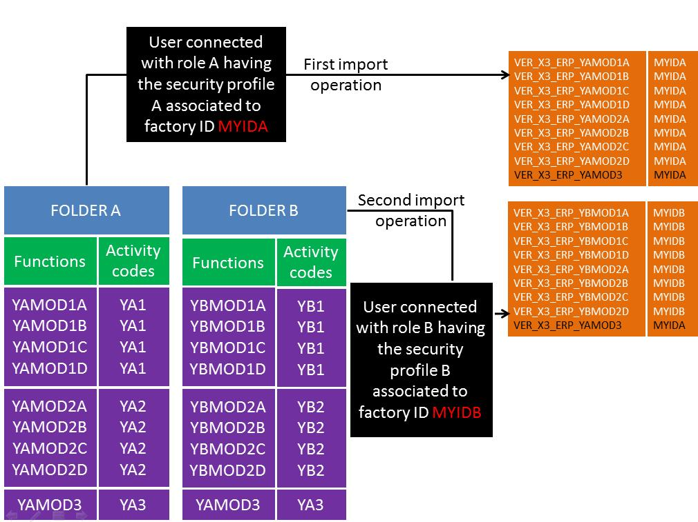

Menu profile import
| Administration Page | Application/Contract | Syracuse/Collaboration | Class | (none) | Representation | menuProfileImport |
|---|
The menu profile import tool allows you to import menu items (from function list) as well as vignettes from the user's portal into the administration repository.
This feature is especially interesting when a folder having bespoke functions is connected to a version 7 web server. All the standard functions of Sage X3 are delivered as menu items in the administration repository, they are not assigned to a given endpoint so they can be used for any X3 endpoint. But of course the bespoke functions cannot be delivered that way, and it is particularly useful to have a function that imports these functions and creates menu items.
Another case where this function is very useful is when the users created a lot of additional personalized portals including vignettes using processes, requests, statistics, or links to web pages. This function will automatically create menu items and portlet from these portal pages definition.
This page can only be called with a working copy (no query or detail facet). Launching the page allows you to enter parameters and to start the import task.
Parameters
The information to enter is the following:
Endpoint
Defines the endpoint (the X3 folder) from where the data is imported.
Import all active locales
When this check box is selected, the menu items description in all the languages declared for the folder are imported.
Locales
This grid allows you to select the languages in which the menu item descriptions are imported. This list can be entered only if the Import all active locales check box is cleared.
Import menu profiles
When this check box is selected, the 'home' Navigation page will be updated based on the 'ADMIN' menu profile of the Endpoint previously selected.
Import vignettes
When this check box is selected, the portal description is imported to generate vignettes.
Set as factory
This check box is available if the user that runs this import is connected with a role that has a security profile associated to a factory ID. When this check box is selected, the factory ID will be associated to the imported elements.
Import mode
This radio button allows you to select one of the different update policies:
- Insert only means that only elements that do not exist in the administration repository are created. All other elements are not modified.
- Insert and update menus only means that only the menu elements are created if they don't exist, or modified if they already exist.
- Insert and update means that the elements are created if they don't exist or modified if they already exist.
- Update only means that only the elements that already exist in the administration repository are considered and modified.
Links
Import
Clicking this link triggers the import based on the given parameters.
Schedule Import
Clicking this link allows a schedule to be selected so that the process can be automated based on the currently entered parameters.
Appendix : rules and best practices
Menu item naming
The import tool creates menu items only for classic functions and V6 vignettes. The naming rules for the functions created is the following:
- the menu profiles corresponding to standard classic functions are called:
- STD_X3_ERP_`FUNCTION` where `FUNCTION` is the code of the function (for Sage X3)
- STD_X3_HRM_`FUNCTION` where `FUNCTION` is the code of the function (for HRM management)
the menu profiles corresponding to bespoke or vertical classic functions are called:
- SPE_X3_ERP_`FUNCTION` where `FUNCTION` is the code of the function (for Sage X3 bespoke functions - see above.)
- SPE_X3_HRM_`FUNCTION` where `FUNCTION` is the code of the function (for HRM management and bespoke functions - see above.)
- VER_X3_ERP_`FUNCTION` where `FUNCTION` is the code of the function (for Sage X3 addons or vertical functions - see above.)
- VER_X3_HRM_`FUNCTION` where `FUNCTION` is the code of the function (for HRM management addons or vertical functions - see above.)
- The menu items linked to native pages (using classes and representations) must be created manually. They can have a free name, but it must follow the usual naming rules we already have for the other elements in dictionary:
- those starting with A are supervisor owned.
- those starting with B to V are standard functional owned.
- those starting with X are addons menu items.
- those starting with Y are vertical menu items.
- those starting with Z are bespoke menu items.
- if the role is associated to a security profile that has a factory ID set, the check box Set imported elements as Factory is present on the launching page if the tool. If this check box is checked, the "VER_" prefixed naming will be used
- otherwise, the naming rule that applies is the "SPE_" prefixed one.
This means that during an execution of this tool, only one type of naming is used, irrespectively on how the functions are named. For instance:
- `VER_X3_ERP_ZFUNC` could be created in an import execution if the checkbox is set, even if the normalization of vertical functions should not use a `Z` prefix.
- `SPE_X3_ERP_XFUNC` could be created in an import execution if the checkbox is not set, even if the normalization of bespoke functions should not use the `X` prefix.
Menu item integration
An important point to note is that the all the functions present on the current folder in the ADMIN menu will be created as menu item if they didn't exist yet. If the user that runs this import is connected with a role that has a security profile associated to a factory ID, the factory ID will be associated to the menu item.
If you want to create menu items associated to different factory IDs, it is important to run the tool from different folders which have only the functions associated to a given factory ID, or to do it in several steps by adding the function to the folders successively before each import.
An example is given by this schema:

In a first step, we import the menu items from folder A. In this folder, we have 3 sets of functions that can be enabled and disabled separately by setting up the activity codes YA1, YA2, YA3. When this is done, the corresponding menu items, starting by VER_X3_ERP_ followed by the function code have been created. As the user running the import function is associated to the MYIDA factory code, all the menu items are associated to this factory code.
In a second step, we import the menu items from folder B. This folder has 3 set of functions associated to YB1, YB2, YA3 activity code (you can see that the last function is exactly the same than in folder A). The integration creates the corresponding menu items, starting by VER_X3_ERP_ followed by the function code. As the user running the import function is associated to MYIDB factory code, all the menu items are associated to this factory code, with the notable exception of the last function, that was already integrated and remains with the factory code MYIDA.
Best practices for updating menu items
If you are a developer and you develop new classic pages functions in a given folder, using this procedure to create automatically the corresponding menu items in your MongoDB repository with a dedicated factory code is the best way to do it.
To deliver the set of bespoke functions you have developed, you will:
- create a vertical patch that integrates every function, object, masks, windows, scripts... defined in your repository.
- export the menu items associated to the factory code that has been used.
If you want to install a set of functions that have been created beforehand on a customer environment, the best practices are to :
- to integrate the patch that has been created
- NOT TO RUN THE MENU PROFILE IMPORT, because this would create all the menu items that are not present in the repository (maybe some other exists), and would not assign the right factory ID (factory IDs are ot available on a customer environment).
- but to import the menu items that have been exported from the development environment.